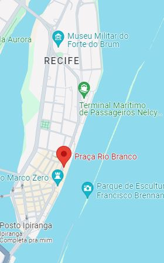

História e Importância
O Marco Zero do Recife é um local histórico de grande significado, marcando o ponto inicial das estradas de Pernambuco.
Localizado no Bairro do Recife, é um ponto de encontro entre o passado e o presente, oferecendo uma rica experiência cultural.

Atrações no Marco Zero
No Marco Zero, você encontrará a famosa Rosa dos Ventos, uma obra de arte que simboliza a centralidade do local.
A vista para o Parque de Esculturas de Francisco Brennand é imperdível, oferecendo uma combinação única de arte e paisagem.

Eventos e Atividades
O Marco Zero é um espaço vibrante que abriga uma variedade de eventos durante o ano, desde shows musicais até feiras culturais.
É um local perfeito para vivenciar a energia e a cultura local do Recife.
Como Chegar
Para visitar o Marco Zero, dirija-se à Praça Rio Branco, no Bairro do Recife. O acesso é fácil, tanto para quem está no centro da cidade quanto para quem vem de outras áreas.
Utilize transporte público ou aproveite os estacionamentos disponíveis nas proximidades.
